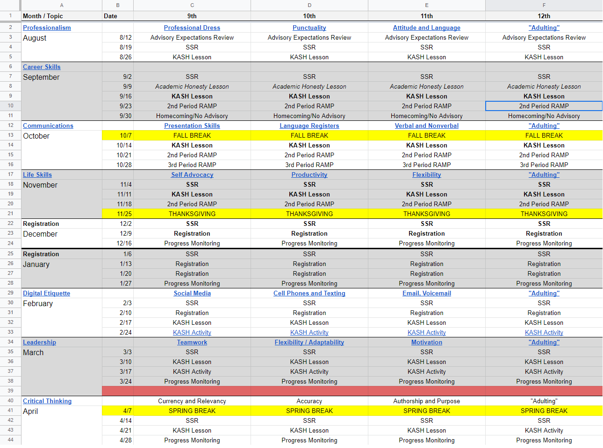

Morgan County Charter High School is a College and Career Academy in the state of Georgia. The school seeks to enhance its educational impact on students in the community by developing career, employment, and soft skills in addition to the traditional academic curriculum. These extra lessons were delivered by all classroom teachers in the building who would lead an “advisory” classroom in addition to their regular teaching loads. However, administrators noticed these lessons weren’t always being taught by the teachers. Also, students were having wildly different experiences from classroom to classroom even though the district was supplying some lesson resources for each week on a google site that teachers could access. The problem was that the supplied resources were not enough to create a full lesson, and many teachers did not have enough time to fill out the lesson with their own content and activities. Even worse, the supplied resources only covered a single year of instruction, so students were getting “repeated” lessons every single year regardless of their academic and developmental advancement.
The district already had a calendar of desired topics and learning outcomes because each month centered around a specific topic or idea. I was also given access to their old google site which contained all the existing lesson resources. The first step was to use a calendar and map out how many lessons would be led each month. This gave the designers an idea of how many new lessons and activities would need to be created. Next, the existing materials were evaluated to determine which lessons already had enough content to be installed into the new program, which ones would need to be enhanced or expanded, and which ones should be removed. After migrating the old content into the new plan, the design team chose new lesson topics for each grade level that centered around the established monthly topics. This way, each grade would be learning about something related to the monthly topic, but the students would not have repeated lessons each year. With the planning stages completed, the design team began writing content for the new lessons. Some lessons include both content presentation and activities, while others provide overviews and discussions or videos about the topic. Because the school is a College and Career Academy, lessons are always presented from a professional perspective with emphasis on how the topic relates to the work force.




The initial version of the KASH curriculum was developed starting in the summer break between regular school years and was completed as the school year completed. Following that year, feedback from students and teachers was incorporated into a revision. For the purposes of professional development, I developed an enhanced version of this curriculum that is more in depth and designed to function completely digitally, with no instructor necessary at all. You can view this development on my KASH+ page on my portfolio. This was my first foray into instructional design and curriculum writing, and was a task I undertook specifically to address a problem I saw in my workplace. All in all, I wrote 44 lessons for this program and gained a lot of experience in approaching content from different angles and writing text and activities for different grade levels.